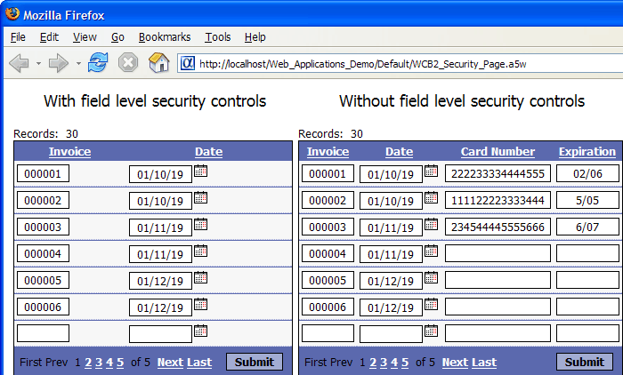

Controlling Access to Fields
Each field on a grid or dialog component has a Column Properties > Security level property. This property contains an integer number with a value of 0 or higher. There is no upper limit to its value.
 Note : A user with
a security level of 0 has unrestricted access.
Any user without an assigned security level has a security level of 0.
Note : A user with
a security level of 0 has unrestricted access.
Any user without an assigned security level has a security level of 0.
The security access level property is compared to a protected session variable named session.protectedSecurityLevel. Your application code should set this variable to reflect the access rights of the current user.
If the user has a security level lower than the field's security level, the field will be hidden. If the user has a security level equal to or greater than the field's security level, the field will be displayed.
The following picture shows 2 versions of the same grid. The grid on the left has field level security controls that hide the Credit Card Number and Expiration fields from users with inadequate security access levels.
The fields have security levels set to 2.
The user on the left has a security level set to 1.
The user on the right has a security level set to 4.

See Also
Web Application Security Framework and Web Security Framework V10.
Limitations
Web publishing applications only.